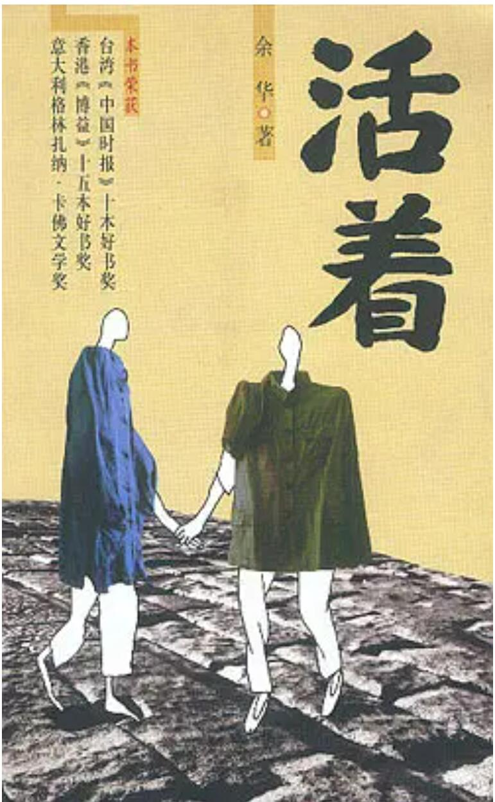

活着
-

内容摘要
"可是我再也没遇到一个像福贵这样令我难忘的人了，对自己的经历如此清楚，又能如此精彩地讲述自己。他是那种能够看到自己过去模样的人，他可以准确地看到自己年轻时走路的姿态，甚至可以看到自己是如何衰老的。这样的老人在乡间实在难以遇上，也许是困苦的生活损坏了他们的回忆，面对往事他们通常显得木讷，常常以不知所措的微笑搪塞过去。他们对自己的经历缺乏热情，仿佛是道听途说般的只记得零星几点，即便是这零星几点也都是自身之外的记忆，用一两句话表达了他们所认为的一切。" "随着时间的推移，我内心的愤怒渐渐平息，我开始意识到一位真正的作家所寻找的是真理，是一种排斥道德判断的真理。作家的使命不是发泄，不是控诉或者揭露，他应该向人们展示高尚。这里所说的高尚不是那种单纯的美好，而是对一切事物理解之后的超然，对善与恶一视同仁，用同情的目光看待世界。"
感悟分享
《活着》这本书并不是告诉我们需要如何去活，而是告诉我们活着应有的态度，拿书中主人公的话说，活着，好好活着。我们无法更改生命的随意抛弃，面对各种不同的遭遇，只能默默去忍受，只能无力的感慨。 虽然一直是以活着为主题,但却故意用一次次死亡去突出这个主题,从一开始那个骗他钱的沈先生,死在粪缸旁的父亲，接着是战场上“身经百战”最后还是死于枪林弹雨的老全，到后来归家得知的母亲过世，龙二被枪决，接着有庆因抽血死亡，再到后来凤霞难产流血过多而死，家珍缠病多年不疾而终，女婿二喜因事故被水泥板压死，外孙苦根竟因吃豆子活活撑死等等，写出了一个那些动荡年代带给人们的痛苦和折磨，而福贵最后活了下来，单纯的活着，寓意深刻。 既然无法改变活着的事实，但可以改变活着的态度，只要活着就会有希望，无论好与坏，至少在生命的尽头可以告诉自己，我们活过，也曾努力奋斗过，始终坚持不气馁，不抱怨，坦然面对这一切。